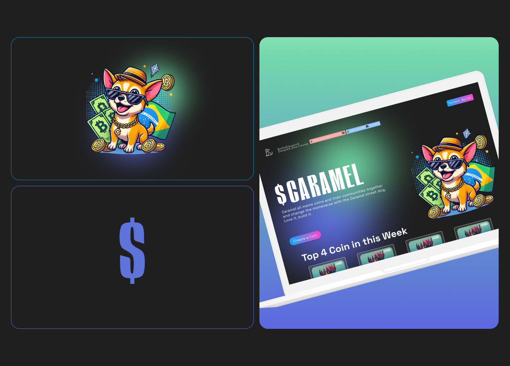

Web3 / Meme Coins
Caramel is a meme coin creation platform built on the LaChain network. Inspired by the pump.fun model, it makes launching tokens simple, fast, and accessible. The UX removes friction from creation so communities can turn ideas into on-chain assets in minutes.
Caramel is a meme coin creation platform built on the LaChain network, inspired by the pump.fun model and designed to remove friction from token launches. The project was created with a clear objective: make on-chain creation accessible to anyone, regardless of prior blockchain experience.
Developed during BlockchainRio 2024, Caramel combined product thinking, UX strategy, branding, and interface design into a lightweight launch experience focused on clarity, speed, and accessibility.

Launching tokens on-chain still feels overly technical for most users. Existing flows often require too many decisions, unfamiliar wallet interactions, and a level of blockchain knowledge that creates unnecessary friction.
For people interested in experimenting, building communities, or launching cultural internet-native assets, the process can feel intimidating instead of exciting.
The goal was to:
The product approach focused on:
Instead of overwhelming users with technical steps, Caramel turns token creation into a more approachable and understandable process, while still preserving the feeling of being truly on-chain.

The research process combined market analysis, competitive references, and quick user validation during the hackathon cycle.
The main insight was clear: users were interested in launching meme coins, but existing tools often felt too complex, confusing, or inaccessible for beginners. This reinforced the need for a product experience centered on clarity, trust, and immediate usability.
Key principles included:
The interface was built to feel immediate and simple, while still aligned with the speed and energy of crypto-native products.
The identity helped position the platform as:
This balance was important to make the experience feel accessible without losing credibility.
Caramel reinforced an important product principle: simplifying blockchain UX is not about removing depth, but about removing unnecessary friction.
It also showed how product design can translate complex infrastructure into experiences that feel fast, clear, and culturally relevant.